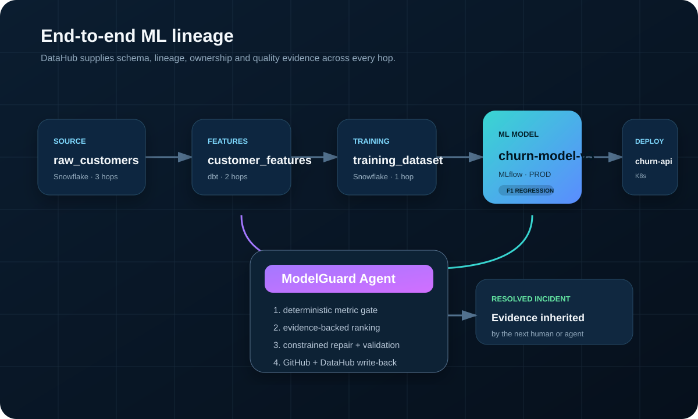

Detect
Fail the metric gate when F1 falls beyond policy.
0.071 regressionA DataHub-grounded production ML agent that detects model regressions, traverses lineage, ranks evidence-backed root causes, generates a constrained repair, validates it in isolation, and writes the resolved incident back without duplicates.
$ modelguard evaluate metric: f1_score baseline: 0.842 candidate: 0.771 status: failed exit_code: 1
Six guarded phases
Each phase has a typed artefact, explicit exit status, and a safety boundary. The reasoning layer cannot skip deterministic evidence or validation.
Fail the metric gate when F1 falls beyond policy.
0.071 regressionResolve schema, ownership, quality signals, lineage and deployments through DataHub.
3 upstream · 1 downstreamGenerate competing hypotheses and rank them with supporting and counter-evidence.
H001 · high confidenceGenerate only the smallest supported change inside an approved file boundary.
1 file · 2 linesApply the patch in a temporary workspace, compile, test and rerun the model gate.
3 tests · F1 0.842Post one review-ready PR comment and one resolved DataHub incident lifecycle.
repeat action: noopWhy DataHub matters

Evidence, not guesses
Eleven evidence records are linked by stable IDs. The direct transformation change also counts as counter-evidence against blaming the unchanged source rows alone.
F1 changed from 0.842 to 0.771.
The PR replaced safe division with direct division.
customer_features is two lineage hops upstream.
Candidate monthly_spend contains 37 infinities; baseline contains none.
The same twelve zero-age source rows existed before the change.
A fix engineers can review
The patch guard rejects protected paths, oversized changes, unsupported file types and unsafe tokens. The proposed change is applied only to a temporary copy, while the original workspace is hashed before and after validation.
def calculate_monthly_spend( total_spend: float, account_age_months: int, ) -> float: + if account_age_months <= 0: + return 0.0 return total_spend / account_age_months
Closed-loop operations
A single marked pull-request comment contains the ranked diagnosis, verified metric recovery and exact patch.
A custom incident is raised and resolved against the affected dataset, preserving the operational history in the context graph.
Hidden markers make publication idempotent across reruns.
Judge it in under two minutes
The showcase uses deterministic fixtures, needs no credentials and writes only to artifacts/. Live DataHub and GitHub modes remain explicit opt-ins.
python scripts/run_showcase.py
Designed to earn trust
Weak or ambiguous evidence exits without a leading diagnosis.
Only a cited file, approved strategy and minimal line budget are allowed.
Repairs run in a temporary workspace with no shell execution.
ModelGuard never applies or merges its own patch.
External writes require explicit --apply and scoped credentials.
JSON, Markdown, diff and incident artefacts remain inspectable.
ModelGuard
Detect the regression. Trace the cause. Validate the fix. Preserve the knowledge.